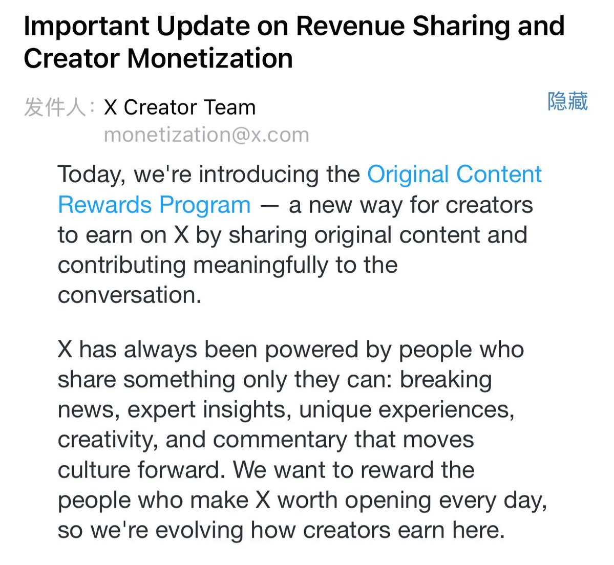

归梦
@GuiMengNya
wok X创作者分成要大改了
原来的 Revenue Sharing 会在 9 月 7 日正式结束，9 月 8 日开始换成新的 Original Content Rewards Program
以后更看重原创内容和 Premium 用户在首页产生的有效曝光，搬运、简单二改、批量自动发帖这些基本都很难拿到钱了
新计划门槛从 90 天 500 万曝光降到了 50 万，但只算 verified users 的 Home Timeline impressions，按理来说比以前很难达成
这下算是大洗盘了😂
